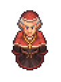

Inquisitor
| Inquisitor | |
|---|---|
 | |
Basic Information
| |
Location :
|
Witch Hill |
Role :
|
Inquisitor |
Day :
|
|

The Village Inquisitor is an NPC who arrives every week on  . You first meet the Inquisitor on the way to Witch Hill on the first
. You first meet the Inquisitor on the way to Witch Hill on the first  of the first week. He will ask you how you came to be the village graveyard keeper and no matter how you answer he will be suspicious of the answer or accuse you of wasting his time with jokes. Afterward he will burn a witch at the stake and mentions that witch activity is on the rise again. His real name is Edward.
of the first week. He will ask you how you came to be the village graveyard keeper and no matter how you answer he will be suspicious of the answer or accuse you of wasting his time with jokes. Afterward he will burn a witch at the stake and mentions that witch activity is on the rise again. His real name is Edward.
Quests
Come Back in a Week
He will ask you to be his friend and report on the the village people, then meet him again on  . You'll earn 10
. You'll earn 10  from joining the burning.
from joining the burning.
If you don't agree to be his friend he will pay you for your services instead, but you will also have to pay him 10 silver if you want to unlock the other side of the graveyard.
Burn the Witch
He asks you to bring him 20×
Firewood and 10×
Flyer in preparation for the next witch trial. Both items will earn you 10  each and give you a total of 20
each and give you a total of 20  . You have to watch another burning for 10
. You have to watch another burning for 10  and will be given access to the vineyard.
and will be given access to the vineyard.
Raising Morale
The Inquisitor tells you that he used to live at the vineyard with his wife and son before they died in the Great Blast. He will give you permission to use his family's vineyard on the west of Witch Hill in exchange for a promise that you bring 10×
Red wine to give to the soldiers (gold wine will not work). You now have access to the Vine trellis workbench as it will appear after you speak to him. Return to the Inquisitor for 10  .
.
Snack Time
He asks that you build a buffet tent and sell food and drink for the witch burning. Return to the Inquisitor after you built the tent for 10  . Business is open!
. Business is open!
- Stock the tent and host a burning for 2-3 more weeks to earn additional
 with the inquisitor, money, and faith. 5 gold-star Burgers are used in each instance of the Inquisitor's Buffet Tent event.
with the inquisitor, money, and faith. 5 gold-star Burgers are used in each instance of the Inquisitor's Buffet Tent event.
For more details check the buffet tent page.
Get Rid of the Guards
As soon as you reach 60  with the Inquisitor he removes the guards from the hill and you earn the achievement "Night watch".
with the Inquisitor he removes the guards from the hill and you earn the achievement "Night watch".
Convincing the Crown
Unlocked after three burnings.
The king is saying nonsense about "human rights" and how it's bad to just burn people without a trial. It's possible he is possessed and the Inquisitor wants you to gather proof of evil in this world. He gives you the technology required to gather 1×
Dark brain, 1×
Dark heart, and 1×
Dark intestine, which he will show to the king. The Quest is triggered after finishing the Bishop's Cathedral Quest he says something about fighting the Inquisition with his brother.
After delivering all three items (each increasing your  by 5), a week later he comes back and says that the king doesn't take those items as proof. The Inquisitor asks you if you know of anything to use as "evidence of witchcraft. Or the undead. Or any other cult stuff." You have to choose between:
by 5), a week later he comes back and says that the king doesn't take those items as proof. The Inquisitor asks you if you know of anything to use as "evidence of witchcraft. Or the undead. Or any other cult stuff." You have to choose between:
- "I could bring you a talking skull. His name is Gerry,"
- The Inquisitor will decline your offer and nothing happens to Gerry (Unlocks "He trusted you..." Steam achievement).
- "There's a dark cult shrine, in the Cellar under the regular one," or
- The Inquisitor gets excited saying "That's exactly what we need! We'll catch them after the ritual."
- "I wouldn't know anything about that sort of thing."
- Leads to the end of conversation.
You will not be able to interact with the Inquisitor anymore - at least for the moment - after either of these conversations.
Release the Gypsy Woman
The Gypsy Baron bids you, to ask the Inquisitor to release a friend of his. Meanwhile, you should have the 60  with the Inquisitor you need for this task. Perhaps, you'll get a good story out of this. Return to the Gypsy Baron afterwards.
with the Inquisitor you need for this task. Perhaps, you'll get a good story out of this. Return to the Gypsy Baron afterwards.
Attend the Ceremony at the Cathedral
After you upgrade the church to a cathedral, the Bishop suggests to ask the Inquisitor to join the opening service. The Inquisitor refuses and suggests someone else.
The Eternal Burning Coal
You can ask about the
Eternal burning coal and he will tell you its story, but you won't get it until you've got 100  with him. That's when you finish Snake's questline.
with him. That's when you finish Snake's questline.
Graveyard expansion
When you complete some tasks and the Inquisitor has 20  with you, you can ask him for permission to expand the graveyard. He will hand you a
with you, you can ask him for permission to expand the graveyard. He will hand you a
graveyard scroll. You can take the scroll to the west side of the graveyard and expand it. Alternatively you can buy the scroll for  10 when not friends.
10 when not friends.
| |||||||||||||||||||||||||||||